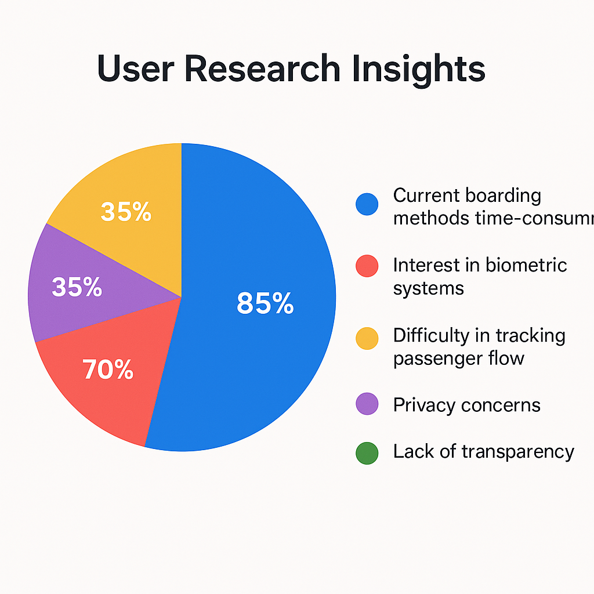

Facial Recognition Aviation Boarding – UX Case Study
Problem Statement
This project aimed to revolutionize the Indian airport experience by introducing a facial recognition-based boarding process. The goal was to save time for passengers and staff while ensuring 100% security compliance.
Requirements
- Facial-based, contactless identity verification from entry to gate.
- Real-time photo capture linked with boarding pass for security clearance.
- Admin dashboard to track enrollments, security status, baggage, immigration, and boarding checkpoints.
- Live monitoring, user access control, and alert management system.

User Research
Conducted in-person interviews with 18–20 passengers and staff across a major Indian airport. Key pain points were identified using:
- Competitive Analysis
- Surveys
- User Interviews
- Persona Development
Key findings and statistics gathered during research:
- 85% of passengers found current boarding methods time-consuming and stressful during peak hours.
- 70% of interviewed users showed interest in biometric systems for quicker access and reduced interaction.
- 60% of airport staff mentioned difficulty in tracking real-time passenger flow across gates.
- Major concerns raised by passengers included privacy issues (35%) and lack of transparency in data handling (20%).
- International travelers emphasized the need for multi-language support and clearer signage in the digital interface.
These insights helped shape key design decisions including visual clarity, simplified interactions, and real-time dashboard implementation for staff monitoring.
Persona Development:
👤 Persona: Rajiv Sharma – Frequent Business Traveler

Age: 38
Location: Mumbai, India
Occupation: Sales Director
Tech Familiarity: High
Goals: Fast, touchless airport experience
Pain Points: Long queues, manual checks
👤 Persona: Sunita Verma – Airport Operations Executive

Age: 29
Location: Delhi Airport
Role: Gate & Check-in Supervisor
Tech Familiarity: Moderate
Goals: Monitor passengers efficiently
Pain Points: Bottlenecks at peak hours, manual validations
Ideation & Testing
Rapid wireframing began with sketches, then moved into low-fidelity wireframes for feedback. Three iterations of testing were conducted using clickable prototypes developed in Invision App.
UI Design
Designed two distinct interfaces: one for passengers (touchless face scan flow) and one for airport staff (real-time monitoring). Emphasis was placed on accessibility, consistency, and usability, all aligned with aviation branding guidelines.
Tools Used
- Invision App
- Figma (for final UI designs)
- Agile, iterative design methodology
My Role
As the individual contributor from the Noida web design team, I led the full UX design lifecycle – from user research to testing, wireframing to UI – ensuring a seamless passenger experience and robust staff toolset. Feedback loops with stakeholders and agile iterations kept the design grounded in user needs.